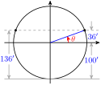

Example 4.37.
You are riding on the Ferris wheel we modeled in Section 4.2, where your height above ground is given as a function of \(\theta\) by
\begin{equation*}
h = 100 + 100 \sin (\theta)
\end{equation*}
When your height is at least 136 feet, you can see the snow on a distant mountain range. Between what angles of rotation can you see snow?
Solution.
Look at the diagram of the Ferris wheel to see that when your height is 136 feet, the sine of the angle \(\theta\) is \(\dfrac{36}{100}\text{,}\) or 0.36. The angle with sine 0.36 is
\begin{equation*}
\sin^{-1}(0.36) = 21.1 \degree
\end{equation*}

And you will be able to see snow until you descend again below 136 feet. That will happen at the angle in the second quadrant with sine 0.36, namely, the second quadrant angle with reference angle 21.1°. And that angle is
\begin{equation*}
180 \degree - 21.1 \degree = 158.9 \degree\text{.}
\end{equation*}
![Runestone Academy logo]()
![MathJax logo]()